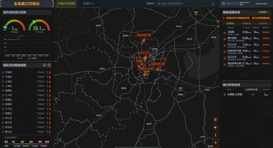
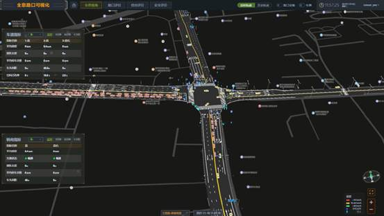
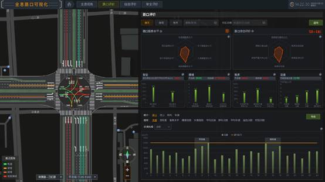
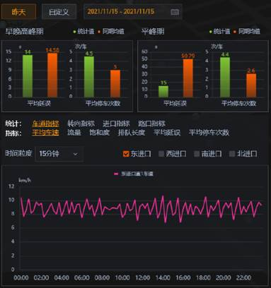
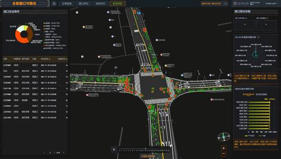

展示城市交通态势监测，主要向用户提供城市、辖区、道路、路口交通态势监测；识别拥堵道路、异常路口，实时预警。

展示路口实时机动车轨迹、非机动车轨迹、行人轨迹，以全息视角监测路口实时运行态势以全息视角监测路口实时运行态势。监测各进口方向的车道指标、转向指标。可以按日期时间、车牌号查询路口机动车的历史轨迹。

基于历史数据进行路口综合评价与评分，直观反映路口交通运行效率、健康水平。同时从路口安全、拥堵、秩序、流量多维度进行评价。对路口、进口道、转向、车道进行指标评价，辅助决策。

实时显示路口信号控制方案及当前相位，监测当前信控方案各相位的信控指标；研判信控数据、对信控方案进行评价，给出方案优化建议。

从路口安全事件、路口渠化诊断两方面进行路口安全评价。安全事件分析，是根据车辆轨迹识别路口冲突点、急加速、急减速、急转弯、超速、疑似单车事故、疑似多车事故、违规停车、大货车右转未停、掉头异常10类事件，实现事件热力分布及动态演变，回放疑似事故车辆轨迹。路口渠化诊断，是根据路口的路网数据分析路口渠化问题，根据动态延误数据分析车道转向合理性。
